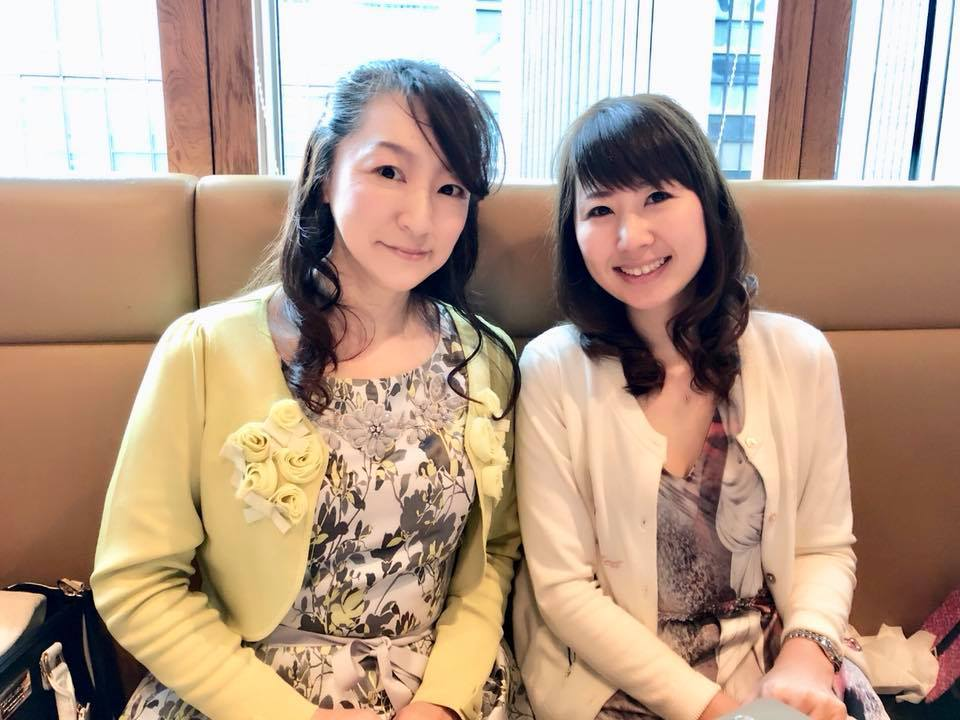
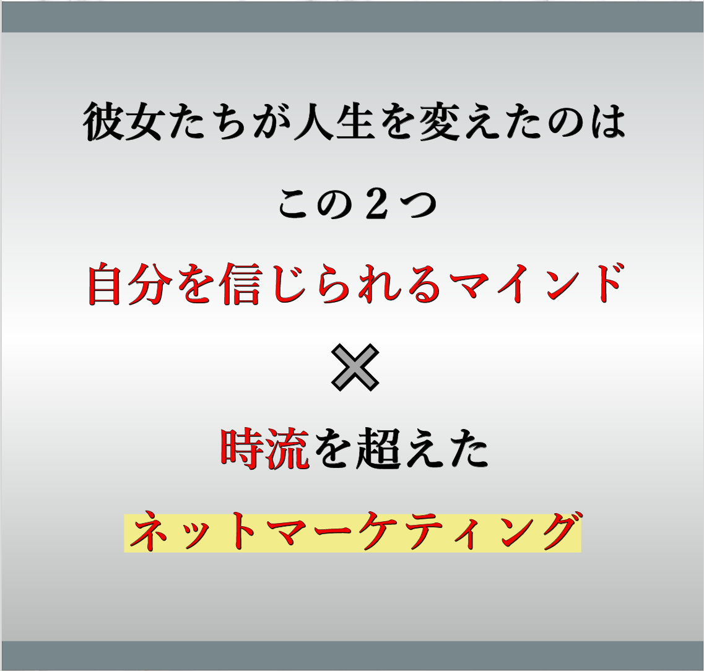
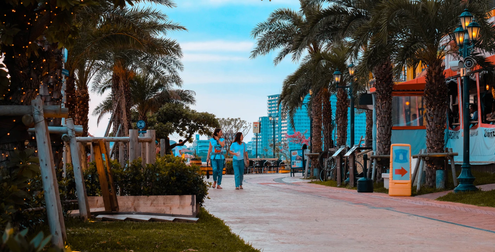

無料で使える
インターネットツールで
ファンを獲得したから
なんです！
こんにちは
北澤英実莉です
子育てしながら起業し、複数の事業を立ち上げ
5年の歳月が流れました
300名イベントを主催したり
0から100万円を生み出す講座生を輩出したり
ビジネスでは大きな成果を上げる
ことができるようになりました
年間海外は年間6回程度
この5年で30ヵ国以上を旅してきました
いろんな方のささえがあったことで、
おかげさまでおかげさまで
このような生活をすることが
できるようになりました
そんな中、
いつも同じ質問を受けるようになりました
↓↓↓それが↓↓↓
「どうやったらエミリさんみたいに
自由な暮らしがに入るの？」
「お金と時間の自由を得たいけどどうしたらいいの？」
「エミリさんみたいになるには
どうしたらいいですか？」
とたくさん聞かれるようになりました
そしてその答えは何かな？と考えてみたのですが
『なんで私がこんなに自由なのか』
その理由は
↓↓↓
1.ネットを発信し続けたこと
2.自分基準の価値観を
貫き自由な
ライフスタイルとは何か？
という定義を決めたこと
3.真面目に生きるのはやめて、
大好きなライフワークを
見つけたこと
実は、たったの
これだけなんです！
- 人生をかえたいと思っているけれど、
今は勇気がなくて
大きな冒険はできない - コロナの影響でサロン経営が成り立た
ない - 仕事が激減して今後がすごく不安だ
- すぐに活用できるネットスキルを手に
入れて
お仕事に活かしたい - 旦那のお仕事も減給になり自分が稼がな
いといけない - 自分で何か新しいことを始めたい
- だけど何からしていいかわからない
- とにかく自由に憧れる
- ブランディングで顔出しすることに抵
抗がある - もっと自由に世界中を飛び回る生活が
したい - 小さな子供がいてもできる
お仕事ス
タイルを構築したい - 子供や家族との時間も大切にしたい
世の中にはいろんな情報があります
そんな中で、あなたにまず知って欲しいことがあります
それは
「夢は待っていても
むこうからはやってこない」
ということです
自ら決断し、行動して初めて
あなたの夢は動き出します
もう待っていても王子さまは来ないことは
あなたも心のどこかでわかっているはず・・
自分で夢を
掴みに行きましょう
あなたはただ、
そのやり方を知らな方だけなんです
私も小さな子供がいて、
外に働きに出かけるのは無理でしたので
お家でできる働き方を選びました
集客も販売も、レッスンも
インターネットを使いお仕事を構築しています
そのおかげもあり、コロナの影響は
あまり受けることなく
お仕事スタイルは変わらずそのままです
これだけオンライン化が進む今
少しのスキルやノウハウだけでは
発信しても埋もれてしまいます
オンリーワンの発信と発想を
しないと見つけてもらいにくいので
「あなたがいい」という
ファンの方を獲得していく必要があります
それは
小手先のテクニックでは
到底手に入らないスキルです
例えば
「ネット集客をするまでの流れを
きっちり整えておく
オンラインでの仕組み構築」
「ブランディングでキラキラ
させることだけじゃない
ネットマーケティングスキル」
「SNS以外の集客方法で継続的に顧客様を獲得」
「お客様に見つけてもらいやすい
キーワードの見つけ方」
などなど細かいスキルもお伝えしています
ですが、今まさにチャンスでもあります
これからどんどんオンライン化が進む今
あなたのお仕事を
たくさんの方に知っていただくチャンスです
むしろ、ラストチャンスとも言えます
私は今から5年前にそれをキャッチし
大きな成果を上げることができました
無料のインターネットツールを使い
人生が激変したように
ぜひあなたにも思い描いたお仕事スタイルを
掴んでいただきたいと思います
そうはいっても、
エミリさんだからできたんじゃないの？
という声が聞こえてきそうです
ですが、実際この手法をお伝えした方々にも
どんどん結果が出始めたんです
テクニックだけお伝えしたら10人いたら
8人が脱落していく世界
マインドをお伝えしても変えられない人が8割
ですが私のこのやり方だと
マインドを教えるのではなく
「自分で気づいてもらうこと」
を重視しているので
すごく腑に落ちる んです
実際腑に落ちて、
自分で気づいて起業の成果を上げられた
方々の声をご紹介します
60代・ネットインフルエンサーの方
「今は集客はSNS一つででいています。
日本のみならず世界中を飛び回る生活を
たったの1年で手に入れることができるようになりました」
50代・WEBコンサルタントの方
「ネットに疎かった私が
ネットマーケティングを覚えることによって
オンラインでのお仕事を
こうちくすることが
できるようになりました
今はもうネットは手放せません」
40代・美容関係 主婦の方
45万円に！
「月に3万円→４5万円に
エミリさんのようになりたい！
そんな生活を手に入れたいと
起業を頑張っていましたが
なかなかうまくいかず、エミリさんと
出会ったことで思い描いていた
人生が手に入りました」
30代・WEBデザイナーの方
「ずっとモヤモヤしていましたが
エミリさんと出会い自分が本当に
やりたかったことが何なのか見つめ直す
きっかけを与えていただきました」


彼女たちが人生を変えたのはこの2つ
自分を信じられるマインド
×
時流を超えたネットマーケティング

ネットノウハウだけを追いかけても
マインドが変わらなければ
何も変わりません
大切なのは
自分の可能性を信じられる
「状態」を作ること
それができないと
どんな塾に入ってもスキルを学んでも
何も変わることはありません
そんな方をたくさんみてきたので
私のところではマインドのところも
かなりお伝えしています
マインドが変わって
自分の可能性を信じることができて
かつ時流を超えた
ネットマーケティングシステム
をマスターすることにより
最短距離で
どんどん人生を変えていかれました
「ネットから高額商品が売れたり」
「ネットからどんどんオーダーが
入るようになったり」
「イベントを満員御礼にできたり」
「ネットだけで完結するお仕事スタイルを
構築できたり」
「一番の悩みが解決したり」
私とであう前の曇った表情が
本当にどんどん晴れていかれました
あなたもこのプログラムに参加することで
彼女たちのように
人生を180度変えてみませんか？
- ・時間と場所、
お金に縛られない働き方 - ・知識や経験で収入を得る方法
- ・自分ブランドを確立する発信の仕方
- ・成功者だけが知っている
マインドセット - ・好きなお客様だけを呼び込む集客方法
- ・プライベートを大切にしながら
できる時間管理術
- ・自由への切符
- ・インターネットを
ビジネスパートナーにする方法 - ・自分でも気づかない感情に気づき、
自由な発想を手に入れる方法
今回、一部の人だけにしか
お伝えしていなかった
「お家にいたまま収入が目指せる
ネットマーケティング手法」
自宅サロンの方
お教室の先生
セラピスト
占い師
コンサルタントの方
このような方々が
このプログラムの内容を知ることで
今のようなコロナの時代でも
時代や環境に左右されず
お仕事が続けられ
るあなたになるため
の
ネットマーケティングシステムです
今まさに必要と思える内容を
パッケージにして
あなたにお届けします
オンライン専用サイトで1年間何度でも動画をご覧いただけます
1.マインドセット動画
何をおいてもマインドが大事です
自由じゃない人の考え方をしている限り
不自由から抜け出すことはできません
まずは自分でビジネスを構築していくための
マインドを知りましょう
2.習慣、日常生活と
時間の使い方の動画
実は自由に生きるための
「日常生活」が非常に鍵となります
時間がないということはなく、
24時間365日時間は平等です
自由な時間を「作り出す」ための時間管理
そしてその時間でどんな毎日を過ごすのか？
生活習慣から変えていく方法をお伝えします
3.インターネットを
魔法のツールに変える
インターネットこれだけは！バイブル動画
・検索に強い自分独自のメディアを持ち検索からの
集客を実現する方法（ワードプレスの設定）
・SEO対策の基本
・すぐできる！アメブロアクセスUP2本
・今すぐ買う気のあるお客様を集める
検索キーワードの見つけ方
・考え方を整理することでサクサク記事が書ける
Xマインドの活用法
高額塾やコンサル生以外では
これまでお伝えしてこなかったノウハウを
今回初公開いたします
これを知ることで
自宅サロンの方
お教室の先生
セラピスト
占い師
コンサルタントの方が
オンラインでお客様を獲得し続ける方法が
分かります
これからのアフターコロナに向けて
ますますオンラインンの需要が高まるため
今のうちに必ず身につけてください
4.集客の基本動画
リアルからオンラインでの集客まで
これを見るだけで集客になぜ悩んでいるかがわかります
何をおいてもリストマーケティングが絶対です
実際私は最初はメルマガとブログで
ビジネスを構築してきました
SNSをする目的についても詳しく解説しています
集客の基本ができていないと
どんなに良い商品を持っていても
必要な方に届けることはできません
これからリアルで合うことが難しくなっても
この基本動画を押さえていれば
最適な集客ができるようになるでしょう
5.お金のマインドセット動画
お金にブロックがある方は多いです
この負のスパイラルから抜け出さない限りは
ビジネス構築は難しいでしょう
まずはお金について学びましょう
＊それぞれに対するワークシートもご用意しております
（一部）
特典1
60分オンラインコンサルティング
無料プレゼント
6ヶ月間有効
もちろん今すぐお受け取りに
なられたい方も可能です
特典2
Instagram集客セミナー録音
あなたもこれを見るだけで
フォロワーが1万人になれる！？
SNS初心者でもできた！
フォロワー1万人になるコンサル生から
北澤英実莉からどんなことを教わり
ネット集客をしたのか？
実際に話していただいています
特典3
ビジネスモデル構築動画
コンサル生だけにお届けしている
ビジネスモデル構築動画
これからお仕事を考え直したい方は
特にオススメ！
長くビジネスを続けるために
絶対押さえておきたい！
ビジネスモデル構築動画
オンラインで今のビジネスをさらに
広げていくには？
特典4
ブランディングとは何か？
動画メッセージinクロアチア
こちらもコンサル生に向けた
動画メッセージ
ブランディングという言葉が独り歩き
している今、
あなたらしいブランディングを
することで
理想のお客様に選んでいただける
自分になれます
特典5
効果的な学習方法
動画メッセージ
inクロアチア
コンサル生に向けたメッセージ
なぜ勉強しても効果が得られないのか？
その理由を明らかにしています
特典6
あなたの資産を構築するために
動画in沖縄 有料商材
お金だけではない
ビジネスに大切な資産とは何か
資産をいかに構築するかについて
お話しています

特典7
あなたのビジネススキルチェックシート
PDF
月収50万円から100万円を
超えている方は
必ず全部埋まってしまうという
チェックシートをプレゼント
豪華７大特典
をプレゼント
特典は先着10名様のみ
今回は普段60万円でお伝えしている内容で
コンサル生だけの特別なページを
さらにコンテンツ化し、
販売します‼‼
今回初公開ということで
すごい内容を公開することに
かなりの抵抗もありましたが
今回コロナの影響で
ますます「不自由」を感じている方々
に何か私ができることをしたい！
そう思い今回は企画させていただきました
渾身の思いで
今回は特典の価格よりはるかに
お安いというあり得ない破格の
お値段で設定しました
なんと！
↓↓↓通常60万円↓↓↓
期間限定価格：
29,800円（税抜）
（税込32,780円）
という破格にてご提供させていただきます！
あなたの人生を変えるのに
決して高いお値段ではないと思います
＜お支払い方法＞
クレジットカード決済or銀行振込
クレジットカードは一括払いのみ
(VISA、マスター、AMEX)
分割についてはクレジットカード会社に
後から分割・後からリボなどの詳細をお問い合わせください。
プログラムの活用法について
- ・DVD等の送付はなく、オンライン動画となります
- ・専用のオンラインサイトにて閲覧できます
- ・本編動画の長さは5分から30分程度となり、
隙間時間にご覧いただけます - ・動画なのでいつでも、何度でも、
どこでも好きな時に繰り返し見ることができます - ・他人に情報やパスワード、動画URLを漏洩、開示は
一切禁止とさせていただきます - ・プログラムの操作方法のみ質問を受けさせていただきます
本当は人生とは自由でいい
私たち女性はいろんなしがらみがありますね
母親の顔
妻の顔
起業家の顔
あまりに疲れ果てて
自分が本当にやりたいことを
見失っている方を多く見てきました
他人がいう幸せ
他人がいう楽しみ
他人がいう理想のお仕事スタイル
あなただけの
幸せとか楽しみってあります
ぜひそれをこのプログラムで
見つけていただきたいな
と思います
ぜひプログラムで
あなたとお話できることを
たのしみしています
最初はいつも一人から
気づけばあなたの周りには
たくさんの自由が
落ちていることに気づきます
愛をこめて
北澤英実莉
北澤英実莉
Emiri Kitazawa
- ●2014年1歳と3歳の娘を育てながら
お稽古サロンで起業 - ●満員御礼サロンを作りネットのみで
集客したことから
手法を聞かれるようになり
コンサルタントとしても活動
- ●セミナー講師
- ●ランチ会、お茶会など
年間50本以上主催 - ●インターネットに精通し、
オンラインコミュニティー1000名を
ネットだけで構築し
人材育成に力を入れ
仕組みを完成させる
- ●お金と時間の自由を得る方法を
様々な方に指導
[実績]
- ・某外資系車メーカーからの顧客向けイベント依頼
- ・「下町ロケット」植松氏をゲストに講演会主催 300名満席
- ・ネット指導1万人以上
- ・リッツカールトン大阪、セントレジス大阪イベント
- 単独毎回満員御礼
[プライベート]
プライベートはほぼほぼ
明かさないことで有名
趣味：
海外旅行（ここ5年で30回以上）
自らお稽古を学ぶこと
読書